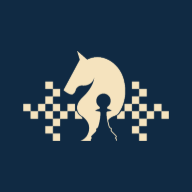

Cargando…
Esta página es de la organización
Tu cuenta no tiene la licencia de «Mesa del árbitro». Si ya tienes un código, actívalo; si no, pídelo.
Activar o pedir una licencia
Mesa del árbitro — Centroamericano 2026Cuánto le queda a cada árbitro
| Árbitro | Torneo | Mesas | Avance | Quedan | Estado | Presencia | Conexión |
|---|
Todavía no hay enlaces activos. Créalos en «Árbitros y mesas».
El avance se pone al día solo cuando cada árbitro abre o guarda en su tablet; «Actualizar desde chess-results» lo lee de todos los torneos de una vez.
Jugadores que no han llegado
Cada árbitro marca en su tablet, mesa por mesa, si el jugador llegó. Aquí salen los que marcó «No ha llegado»; si el jugador llega, el árbitro lo cambia y desaparece de la lista.
| Torneo | Mesa | Jugador | Color | Árbitro | Marcado | Tiempo de espera |
|---|
Ninguno marcado como «no ha llegado».
Pedidos de ayuda y avisos de los árbitros
Se actualiza sola cada pocos segundos: deja esta ventana abierta durante la ronda. No suena nada (en un torneo no puede haber ruido): los avisos se ven en la barra de abajo, en el número de esta pestaña y en el título del navegador.
Nadie ha pedido ayuda ni avisado. Cuando alguien lo haga, aparece aquí (sin sonido).
Ya atendidos (0)
Enviar un aviso a los árbitros
Avisos enviados
| Hora (Costa Rica) | Mensaje | Lo leyeron |
|---|
Todavía no has mandado ningún aviso.
Nuevo árbitro (un enlace con su QR)
Repartir las mesas de un torneo entre varios árbitros por definir
Dices cuántas mesas hay y cuántos árbitros serán: se crean todos los enlaces de una vez, con mesas seguidas y parejas, y cada uno queda como «Árbitro N» hasta que alguien le ponga nombre. Puedes cambiar después las mesas de cada uno.
Los enlaces creados
| Árbitro | Mesas | Estado | Conexión | Acciones |
|---|
Todavía no has creado ningún enlace.
A cada árbitro se le abre una ventana (que puede minimizar si necesita meter un resultado) para elegir una partida SIN terminar y anotar, de las blancas y de las negras, lo que marca su reloj y las jugadas que lleva. El árbitro también puede abrirla por su cuenta, con el reloj de cada mesa. Cada lectura queda anotada con su hora (y como una línea en «Lo que anotan»); no se borra: si un reloj falla, la última lectura sirve para corregirlo.
| Torneo | Ronda | Mesa | Partida | Blancas (tiempo · jugadas) | Negras (tiempo · jugadas) | Árbitro | Hora (Costa Rica) |
|---|
Todavía no hay lecturas. Pídele un control de tiempos a un árbitro.
Conectar o cambiar el Drive («Planillas Centroamericano»)
Las fotos de las planillas se guardan primero aquí, a salvo, y pasan al Drive en la carpeta Planillas Centroamericano, ordenadas por torneo y por ronda, con el nombre del enfrentamiento. Eso lo hace un Apps Script de la dueña del Drive (documentos/centroamericano/puente-drive.gs): pega aquí la dirección y el secreto que da al instalarlo. Se prueban antes de guardarse.
| Torneo | Ronda | Mesa | Partida | Árbitro | Subida | Drive | Foto |
|---|
Todavía no se ha subido ninguna foto.
Una sola clave para todo el torneo
Los torneos del Centroamericano están ligados en un grupo de chess-results: no hace falta una clave por torneo. Pon aquí el código del grupo y su clave (SID), la de «Internet / Customize lists on chess-results.com» en Swiss-Manager. Se prueba contra chess-results antes de guardarla y queda cifrada: nadie la vuelve a ver, ni tú ni los árbitros.
Otras claves: un torneo que no esté en el grupo
Solo si algún torneo no está ligado y tiene su propia clave. Una línea por clave: el código de la base de datos del torneo y la clave, separados por un espacio. Por ejemplo: 1529719 AAAA1111BBBB2222CCCC3333DDDD4444.
Copia de seguridad automática
- Cada 5 minutos, si algo cambió, se guarda una copia de todo lo que solo vive aquí: los enlaces de los árbitros (con el mismo token, así los QR impresos siguen sirviendo), lo que anotaron, los avisos, el avance, las rondas finalizadas y las planillas.
- Cada hora se guarda otra, que se conserva tres días.
- Cada 10 minutos, si el Drive está conectado, la copia también se manda a «Planillas Centroamericano / _Copias de seguridad».
- La clave de chess-results no va en la copia (queda cifrada aparte): si hiciera falta, se vuelve a poner una vez en «Clave de chess-results». Los resultados de las partidas viven en chess-results y Swiss-Manager.
- Restaurar solo agrega lo que falta: nunca pisa lo que ya está. Se puede restaurar desde una copia de esta lista o desde un archivo que bajaste.
| Hora (Costa Rica) | Cuál | Enlaces | Anotaciones | Avisos | Planillas | Acciones |
|---|
Todavía no hay copias. Se guardan solas durante el torneo; también puedes hacer una ahora.
Jugadores con ilegales o irregularidades
| Torneo | Ronda | Mesa | Jugador | Ilegales | Irregularidades |
|---|
Ninguno todavía.
Todo lo anotado
| Hora (Costa Rica) | Torneo | Ronda | Mesa | Árbitro | Qué | Detalle |
|---|
Todavía no hay nada anotado.
MODO ENSAYO: ves y creas solo los torneos de PRUEBA. Nada de esto se mezcla con el torneo real.